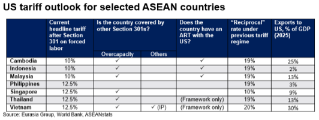
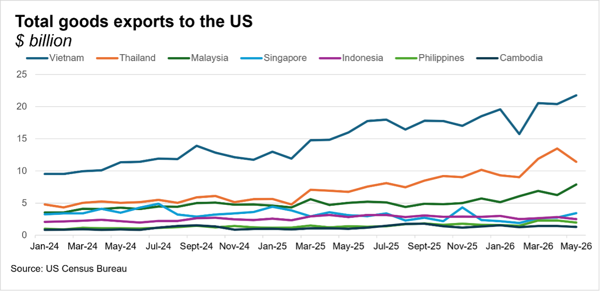

|
 |
|||
|
||||
|
||
Indonesia, Malaysia, and Cambodia get favorable treatment on forced labor tariffs. In addition to a lower headline rate of 10%, these countries, which already have ARTs with the US, received wider exemptions from the new Section 301 duties, including for some key commodity exports such as palm oil. The three countries—alongside Bangladesh, which also has an ART—will benefit as well from a new tariff-free quota system for textile exports if they use US cotton. That system gives them an advantage over Vietnam and other competitors. The Philippines, Singapore, Thailand, and Vietnam—like most of the 60 economies investigated—received a 12.5% rate and narrower exemptions. Importantly, the new tariff does not apply to advanced semiconductors or other goods covered by existing and planned Section 232 sectoral duties. The Section 301 duties provide a new baseline for US tariffs. Washington had applied a temporary minimum 10% import surcharge since February, after the Supreme Court struck down the reciprocal duties President Donald Trump imposed last year under the International Emergency Economic Powers Act (IEEPA). The temporary measure expired on 24 July. The gap between countries that have ARTs and those that do not creates an incentive for the latter—especially heavily export-dependent Vietnam and Thailand—to offer Washington more market access concessions and ramp up purchases of US goods to secure deals. It is unclear, though, if concluding an ART or introducing a forced labor prohibition measure (as Vietnam did just before the finalization of the tariffs) would automatically unlock the lower 10% baseline from the forced labor duties and/or inclusion in the tariff-free quota regime for textiles. Section 301 investigation on overcapacity and separate sectoral tariffs remain threats. The final shape of the new US tariff regime for Southeast Asian countries is not yet clear, though headline rates will likely be broadly similar to the 19%-20% “reciprocal” duties on most major ASEAN countries before the Supreme Court decision. There could be slightly more variation among ASEAN member states, however, and the average effective tariff rate will also depend on sectoral duties. Cambodia, Indonesia, Malaysia, Singapore, Thailand, and Vietnam are among 16 economies covered by the ongoing 301 investigation into overcapacity. The timeline and likely eventual tariffs—which are expected to layer on top of the forced labor duties—remain unclear (see: Overcapacity tariffs likely to layer on top of forced labor baseline, 8 June 2026). ASEAN nations, even those with ARTs, will seek preferential treatment and exemptions for key sectors, though securing them may be difficult.  The Philippines could eventually emerge as the regional tariff winner. The country faces a higher 12.5% rate under the forced labor Section 301 and does not have an ART. However, no other investigations currently cover the Philippines, largely because it is a smaller trading partner with the US compared with regional peers and there are fewer bilateral trade irritants. Officials in Manila hope that relative insulation will give the country a tariff advantage. The Philippines and Singapore are also the only ASEAN countries in Pax Silica, the US-led tech and supply chains initiative. Whether Manila could leverage a tariff advantage to strengthen its lagging position in supply chains remains to be seen, given energy, infrastructure, and other challenges. There is also a risk that Washington later hikes tariffs on the Philippines through other channels, raising them to a level similar to those of regional peers. Vietnam remains the country most at risk from US tariffs. In addition to the other Section 301 investigations, Hanoi faces a country-specific intellectual property probe. Thus, Vietnam could end up with a higher tariff wall than regional peers, though Hanoi has been clamping down on intellectual property theft to discourage further US action. Vietnam has dragged its feet on ART negotiations, partly because its exports to the US have grown despite trade threats. It will now likely increase its offer to purchase US goods, particularly agricultural products and aircraft, and grant more market access in hopes of accelerating talks. Cooperation on critical minerals and rare earths could also play a role. Vietnam has not yet signed a related memorandum of understanding, unlike some other ASEAN countries. More positively for Vietnam, which relies heavily on Chinese components, the hefty transshipment tariffs threatened under the IEEPA framework are no longer in place. This risk has not completely disappeared, however. Washington could still use other legal or policy tools to impose similar measures, especially with higher tariffs on China than Vietnam and other ASEAN countries incentivizing transshipment.  The new tariff system also creates problems for Singapore. The trading hub now faces a baseline 12.5% tariff rate, up from 10% previously. That rate could rise again after the Section 301 overcapacity investigation. |